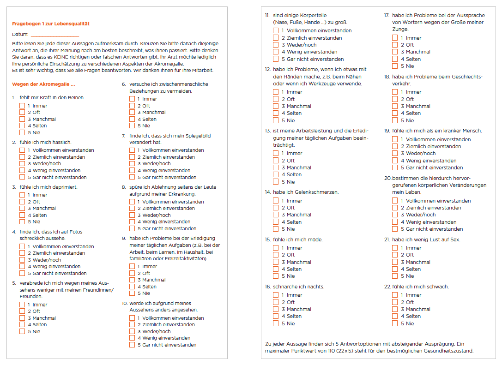

Download:
Download: Keine Erkrankung ist einfach. Manche Erkrankungen aber sind besonders komplex – eine davon ist Akromegalie.
HYPOPHYSENTUMORE: VON DER DIAGNOSE ZUR THERAPIE
Du lämnar nu www.akromegali.se. Länkar till webbplatser utanför Pfizer tillhandahålls som en tjänst för användaren. Pfizer tar inget ansvar för innehållet på länkade webbplatser.

Keine Erkrankung ist einfach. Manche Erkrankungen aber sind besonders komplex – eine davon ist Akromegalie.
Keine Erkrankung ist einfach. Manche Erkrankungen aber sind besonders komplex – eine davon ist Akromegalie. Sie hat ein breit gefächertes Krankheitsbild mit vielen Symptomen; sie betrifft den ganzen Körper, hat physische und psychische Folgen – und kann das ganze Leben aus den Fugen geraten lassen. Nichts davon kann isoliert betrachtet werden. Deshalb wäre es auch zu kurz gedacht (und zu kurz gehandelt), bei dieser Erkrankung nur die Laborwerte zu berücksichtigen.
Eine internationale Expertengruppe hat daher ein System mit fünf wesentlichen Kriterien für die Bewertung der Krankheitsaktivität entwickelt. In dieser umfassenden Betrachtung sind die folgenden Faktoren enthalten, die auf eine Behandlung möglichst nahe am persönlichen Optimum abzielen:
1. Lebensqualität – Ihr persönliches Krankheitsempfinden
2. Symptome – Ihre Beschwerden durch Akromegalie
3. Begleiterkrankungen – die durch Akromegalie mitverursachten weiteren Erkrankungen
4. Tumorgröße – die Ursache der Krankheit
5. IGF-1 – der für das Wachstum hauptverantwortliche Wachstumsfaktor

Aus der Sicht des Patienten stehen oft die persönlich erfahrbaren Aspekte, wie die Symptome und die Lebensqualität, erst einmal im Vordergrund. Diese werden um die aus medizinischer Sicht auf das Gesamtbild der Krankheitsaktivität Einfluss nehmenden Faktoren wie Begleiterkrankungen, Tumorgröße und IGF-1 ergänzt. Damit Akromegalie behandelnde Ärzte alle fünf Parameter umfassend, also auf Dauer und möglichst übersichtlich im Blick haben, wurde ACRODAT® als Therapiehelfer und medizinische Software entwickelt. 321
Wie die Fragebögen im Zusammenhang mit ACRODAT® ausgefüllt werden können, wird in einer Patientenbroschüre beschrieben, die hier zum Download bereitsteht.
Voraussetzung für die Verwendung von ACRODAT® (Acromegaly Disease Activity Tool = Akromegalie-Krankheitsaktivitäts-Tool) ist, dass Ihr behandelnder Arzt diese Software einsetzt. Falls ACRODAT® in Ihrem behandelnden Zentrum bzw. in der behandelnden Praxis nicht verwendet wird, können Sie mithilfe der Patientenbroschüre zum Umfassenden Blick bei der Behandlung von Akromegalie dennoch die systematische Berücksichtigung Ihrer Symptome und gesundheitsbezogenen Lebensqualität unterstützen. Hier finden Sie die Patientenbroschüre zum Download. Sprechen Sie auch mit Ihrem behandelnden Arzt bzw. mit Ihrer behandelnden Ärztin über Wege, gemeinsam Maßnahmen für Ihr Leben mit Akromegalie möglichst nahe an Ihrem persönlichen Optimum zu ergreifen. Eine gute und allgemeinverständliche Option, sich einen Überblick über die fünf bestimmenden Faktoren der Akromegalie zu verschaffen, bieten die Videos mit Dr. Johannes Wimmer.
Akromegalie-Patienten, Angehörige und Interessierte finden im Folgenden sechs Videos über Akromegalie und mögliche Behandlungen.
Ziel dieser Videos ist es, Ihnen Hintergrundinformationen über Ursachen und Zusammenhänge an die Hand zu geben.
Dr. Johannes Wimmer erklärt umfassend die Seltene Erkrankung Akromegalie sowie fünf Bereiche, die bei der Behandlung und Kontrolle der Akromegalie von Experten als die wesentlichen Faktoren angesehen werden.
Keine Erkrankung ist einfach. Manche Erkrankungen aber sind besonders komplex – eine davon ist Akromegalie.